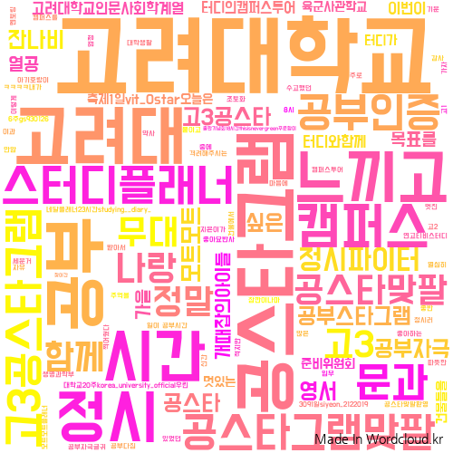

Lecture
데이터마이닝 강의 with Python [KUCC]
2019.09 ~ 2019.12
KUCC 에서 전통적 머신러닝 기법인 association rules, supervised learning algorithms (classification & regression) , unsupervised learning algorithms (clustering) 이론을 설명하고 Python으로 실습수업을 진행함.
Github자료

크롤링 강의 with Python [KUCC]
2020.01~
KUCC 에서 Python으로 BeautifulSoup를 통한 100개 기업 정보 크롤링하기, selenium을 통한 인스타그램 해시태그(#고려대학교 등) 크롤링하여 버즈량 분석하기, 날씨 기사의 날씨 정보 크롤링하여 데이터프레임 구성하기 ... 에 대한 예제를 만들어 수업함.
Github 자료